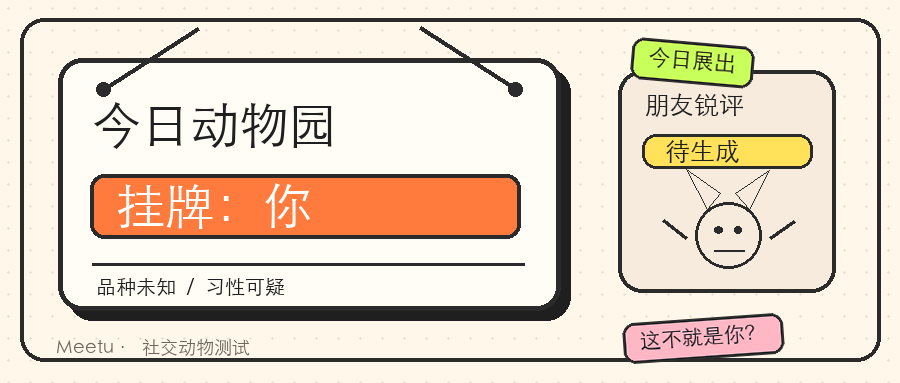
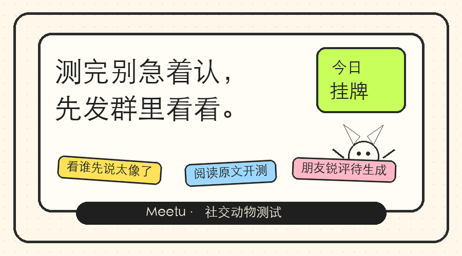

今 日 展 出
品种：未知。
习性：可疑。
朋友锐评：待生成。
我先挂牌了。
本来只想随手点一下，
谁知道它这么懂。
它说我白天勿扰，晚上才开机；
说我报名时真诚，出门前消失；
说我没说话不代表脑内弹幕停过。
比如它会写：
"你不是失踪，你只是进入了省电模式。"
"你不是鸽，你只是出门启动失败。"
"表面风平浪静，内心已经开了八个直播间。"
品种我先不说。
怕你提前代入。
最缺德的是挂牌下面那栏：
朋友锐评。
那不是给你看的。
是给你朋友截图用的。
我把说明牌发群里。
本来想让大家反驳一下。
朋友只回了五个字：
这不就是你？
行。
我闭嘴。
动物园现在对所有人开放。
先进来转一圈，挂牌不报品种。
测完你再决定要不要告诉朋友。
建议别当着熟人点开🍑

点下方「阅读原文」，进动物园。